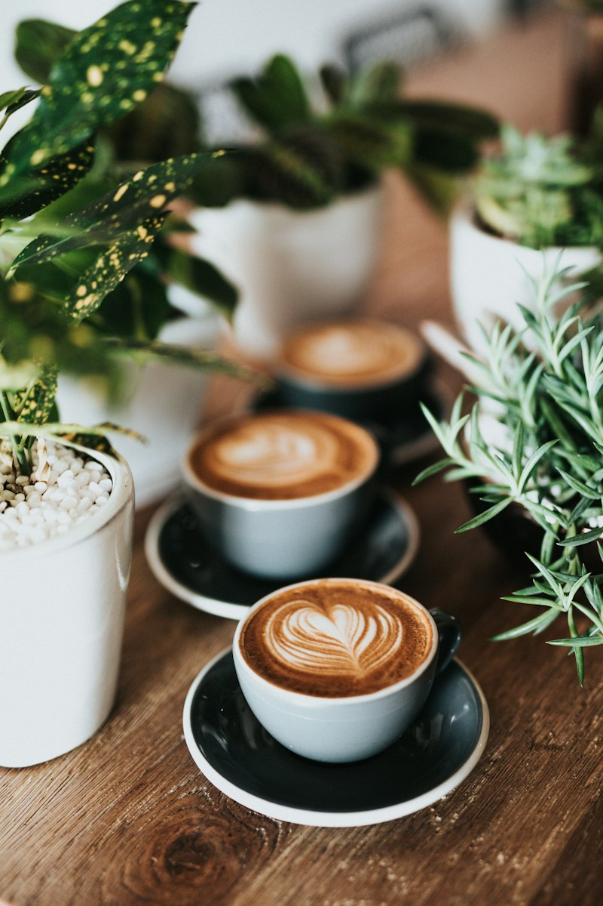

Bebidas em destaque
Do expresso curto ao mocha com calda de chocolate amargo, todas bebidas sao preparadas na hora nada fica esfriando no balcão.

| Item | Descrição | Tipo | Preço |
|---|---|---|---|
| Expresso | Intenso, aromático e encorpado | Quente | R$ 9,90 |
| Mocha Gelado | Café, chocolate meio amargo e leite gelado | Gelado | R$ 11,90 |
| Pão de queijo | Fresquinhos, feito no dia | Salgado | R$ 5,00 |